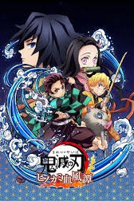
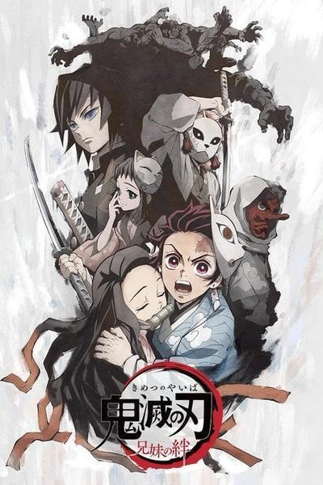
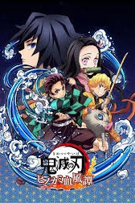
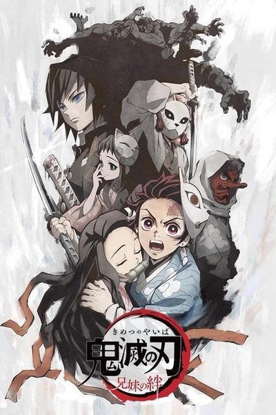
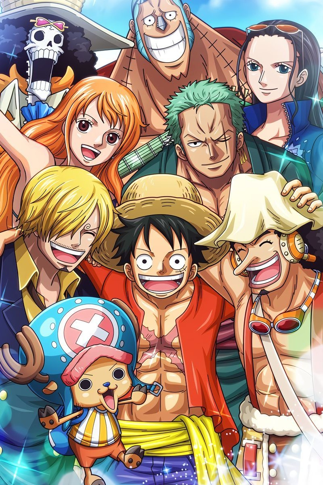
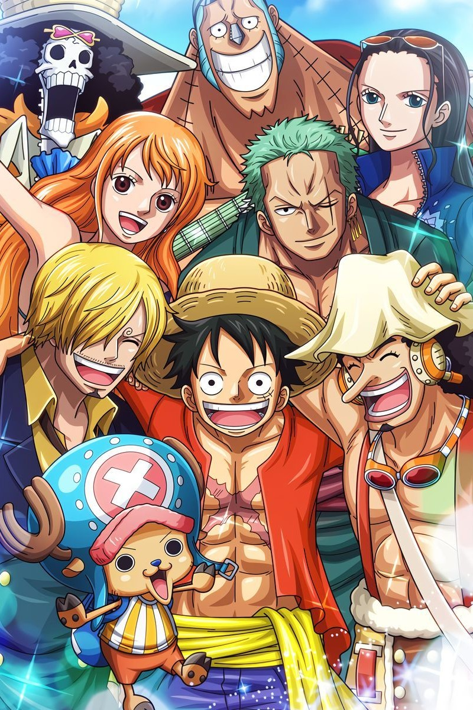

Manga/Anime
Aquí vas a encontrar nuestras recomendaciones de Mangas y Animes
Aquí vas a encontrar nuestras recomendaciones de Mangas y Animes
Narrada por Tsugumi Oba e ilustrada por Takeshi Obata, Death Note narra la historia de Light Yagami, un inteligente y taciturno estudiante de secundaria que está aburrido con su vida. Un buen día, llega a sus manos un extraño cuaderno. «Cuaderno de muerte», reza la portada. ¿De qué se trata? ¿Acaso es una broma? ¿Qué significa todo eso? Death Note es otro de los mangas indispensables para todo lector amateur que quiera iniciarse. Divertida, intensa, llena de grandes e inolvidables momentos, con personajes carismáticos y una trama que engancha. El anime está a la altura, obviamente, pero la experiencia lectora también es muy recomendable.


Guardianes de la Noche no trata de reinventar nada. Es un shonen clásico, pero cuenta con unos protagonistas arrolladores y un mundo extraordinariamente bien construido. Donde mucho abunda, poco brilla; pero lo que brilla, lo hace con una potencia cercana al sol. Esta es la última estrella de la industria del manga. No te la pierdas, en serio.
 



Un valiente joven con poderes increíbles se aventura hacia un viaje místico en tierras exóticas llenas de guerreros nobles, princesas hermosas, monstruos mutantes, extraterrestres y crueles ejércitos.
Escrita y dibujada por Hiromu Arakawa, Fullmetal Alchemist nos sumerge en un universo steampunk próximo al mundo creado por la Revolución Industrial. Sin embargo, en este mundo de ficción la alquimia es una de las técnicas científicas más empleadas y conocidas por los humanos. Y allí es donde entran Edward y Alphonse Elric.
>Escrita y dibujada por Masashi Kishimoto, Naruto cuenta la historia de un ninja adolescente. Sus padres murieron cuando él era solo un niño tras el ataque del Zorro Demonio de Nuevo Colas. Desde entonces, Naruto Uzumaki crece en su querida aldea y sueña con convertirse en Hokage, líder de su pueblo. Busca reconocimiento y ser alguien importante, dado a sus amigos y su nueva familia.
Narrada e ilustrada por Eiichiro Oda, One Piece es quizás el manga más importante, grande y reconocido de la historia. Pocas franquicias tienen el peso que tiene One Piece. Sin embargo, a pesar de su magnífica narrativa, es una historia extraordinariamente extensa. La cantidad de episodios podría echar para atrás al nuevo lector. Pese a ello, lo recomendamos.
 
